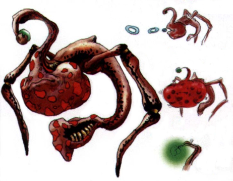
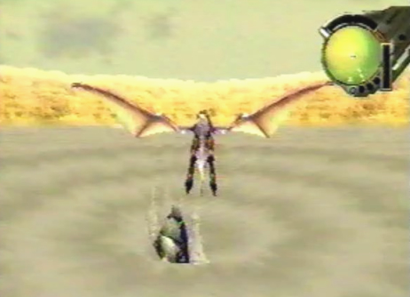
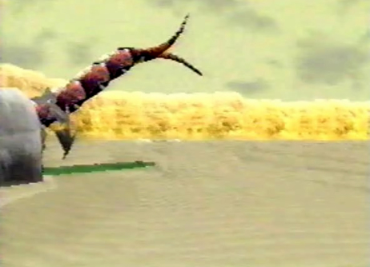
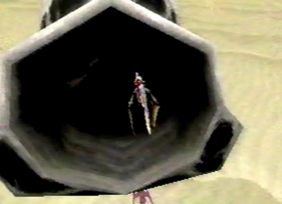
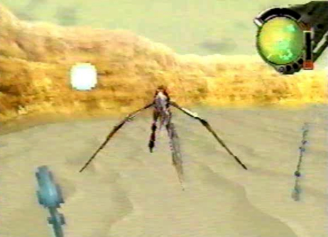
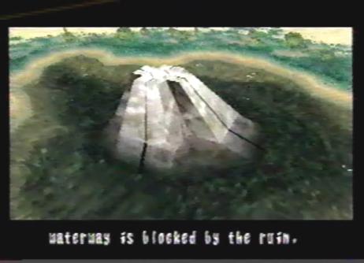
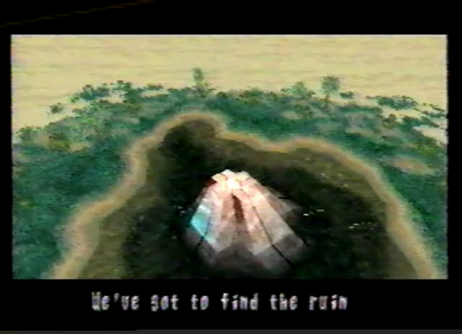
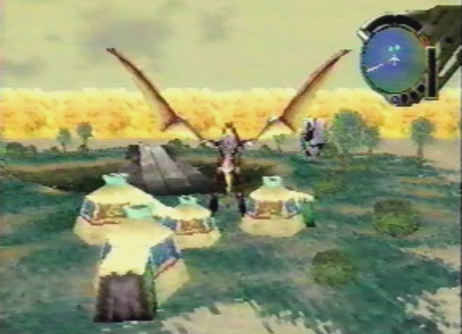
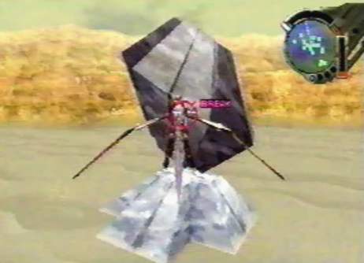
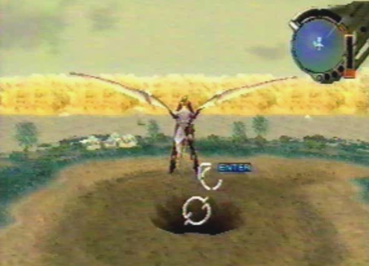

Diary Entry 9: (Garil Desert) Green Oasis An Oasis of Wonder As we emerged from the tunnel we found ourselves at an amazing green oasis! The water surrounding it was pure and clear. Gash told me the waterway which could be found below the oasis, was being blocked by the central ruin. Once we accessed the ruin, it began to flash. Gash said the ruins were linked together like a nervous system. Our only option was to find the ruin which was linked to the oasis one. Not too far from the green oasis, we found a spinning ruin. I knew this had to be it! The dragon destroyed it, and it came crashing down to the sand below. Upon returning to the oasis, the central ruin and the water surrounding it, were completely gone! Where the ruin used to be, was a large hole leading down into the waterway tunnel. But we had a problem, we had just completely removed the nearby hunter caravan's water source! Well, it was an accident after all. We moved on to the underground waterways. I hoped the hunters wouldn't chase after us!  |
|
| Divine
Overview |
 1. In one of the sand pits, you will find a helpless baby sand worm about to be engulfed by the quicksand. Don't let the poor thing die. Lock-on to it and blow it out of the pit. |
 2. After the baby sand worm is freed, a red sand worm (possibly the baby sand worm's mother) will emerge from the sand and crash into the tunnel that was sealed. |
 3.This tunnel will bring you to the Secret Worm Family Passage, where you can find a Mauler gun! Equip it right away, it will most certainly help out in future battles. |
4. Near the large ruin, you will find an assortment of strange plants. Start shooting at the tips of each one. |
5. Eventually, one of the plants will shoot out a bright red fruit, called Kuo Pollen. This fruit allows your dragon to maintain its momentum. While flying (holding B), press L, let go of L, then let go of B. You will now be able to fly without having to constantly hold down the B button! |
 6. When you shoot the surrounding plants, they give off a white spore. If you leave the oasis and come back, the spores will have planted themselves in new areas, creating more Kuo plants. |
 7. A ruin is blocking the way down into the waterway. |
 8. Access the ruin and it will begin to pulsate with red energy. In order to remove it, you will need to find the other ruin which is linked to this one. |
 9. Observe the hunter caravan that can be found on the edge of the green oasis. Too bad you can't go visit them. |
 10. The other ruin that links to the oasis one, can be found not too far away. Lock-on and break the ruin. |
 11. When you return to the green oasis, the ruin and surrounding water will be completely gone, revealing the entrance to the underground waterway. But now you have removed the only source of water the hunter caravan had! You Bastard! Oh, well. Off to the Blue Ruins with you! |